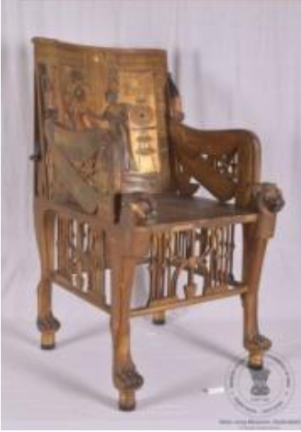
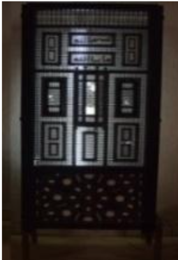
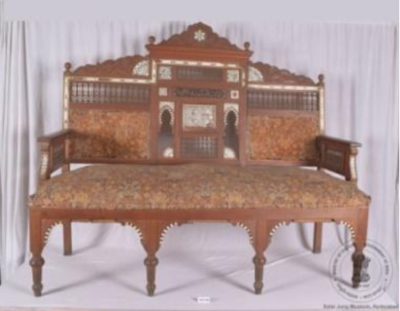
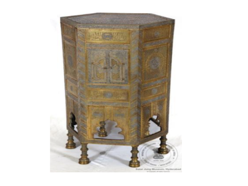
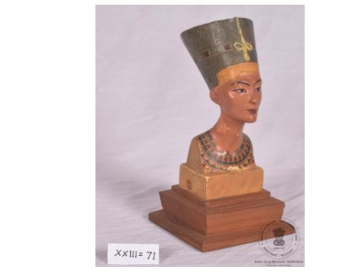
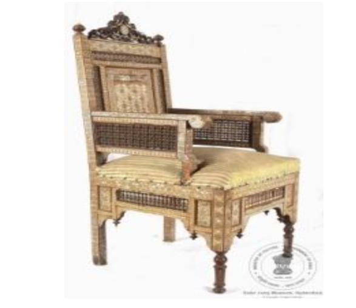
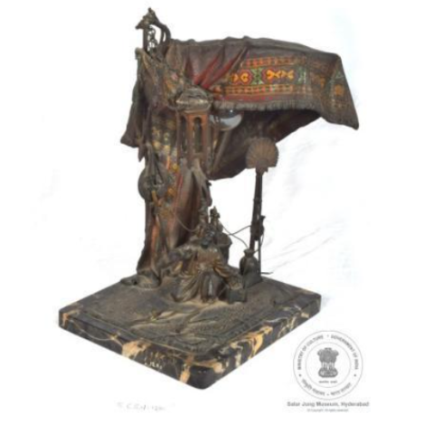
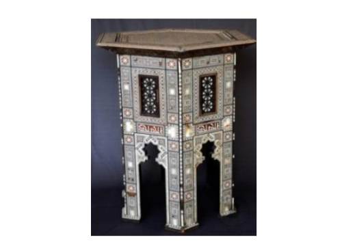
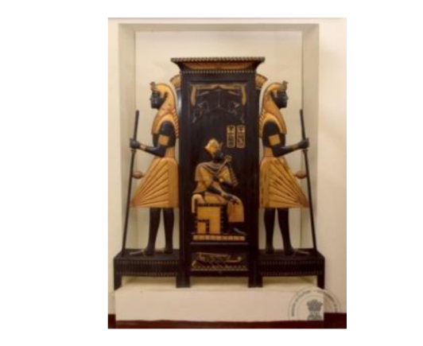
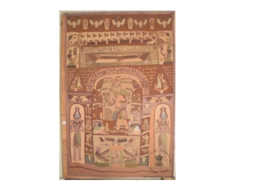

इजिप्शियन आणि सीरियन गॅलरी (Egypt and Syrian Gallery)
ऑडिओ मार्गदर्शक एपच्या उद्देशाने इजिप्शियन आणि सीरियन गॅलरीमधून खालील निवडलेल्या वस्तू.
ഈജിപ്ഷ്യൻ, സിറിയൻ ഗാലറി (Egypt and Syrian Gallery)
ഓഡിയോ ഗൈഡ് ആപ്പ് ഉദ്ദേശ്യത്തിനായി ഈജിപ്ഷ്യൻ, സിറിയൻ ഗാലറിയിൽ നിന്ന് ഇനിപ്പറയുന്ന തിരഞ്ഞെടുത്ത വസ്തുക്കൾ.

अभिलेख संख्या: XXIII-95
1. कुर्सी (तूतनखामेन)
यह तूतनखामेन के सिंहासननुमा आसन की प्रतिकृति है, जिसे लकड़ी पर स्वर्ण-मढ़ाई तथा अन्य रंगों से सजाकर बनाया गया है। यह कला का एक अद्वितीय नमूना है। कुर्सी के पैर सिंह के पंजों के आकार के हैं, जबकि हत्थे गिद्ध के रूप में बने हैं और उनके अग्रभाग पर सिंह का सिर अंकित है। कुर्सी के पीछे के भाग में फ़राओ तूतनखामेन के राज्याभिषेक का दृश्य दर्शाया गया है। पीछे तथा दोनों ओर फन फैलाए नाग उकेरे गए हैं। एक प्रसिद्ध अमरना शैली के दृश्य में रानी अंखेसेनामुन अपने पति तूतनखामेन के गले पर सुगंधित तेल लगाते हुए एक पात्र थामे दिखाई देती हैं। उनके ऊपर एटन का सूर्य चक्र चमकता हुआ दर्शाया गया है। यह दृश्य कला इतिहास के सबसे प्रसिद्ध और आत्मीय दृश्यों में से एक माना जाता है, जिसमें युवा राजा अपनी पत्नी द्वारा सुगंधित लेप लगाए जाने का आनंद लेते हुए दिखाई देता है। यह कुर्सी 20वीं शताब्दी ईस्वी की है।

अभिलेख संख्या: XXIII-101
2. स्क्रीन
यह तीन पैनलों वाली एक सुंदर लकड़ी की स्क्रीन है, जिसे लकड़ी और हाथीदाँत के टुकड़ों से बनाया गया है। प्रत्येक पैनल का लगभग दो-तिहाई भाग लकड़ी और हाथीदाँत के मनकों की जालीदार कारीगरी से सुसज्जित है, जबकि शेष भाग में ज्यामितीय आकृतियों में सजी लकड़ी पर हाथीदाँत की जड़ाई की गई है। बीच वाले पैनल पर अरबी भाषा का एक शिलालेख अंकित है। इसका डिज़ाइन एक भवन के अग्रभाग जैसा है। इसमें तहखाना, भूतल पर एक दरवाज़ा और चार खिड़कियाँ, पहली मंज़िल पर एक बालकनी और दो खुलने वाली खिड़कियाँ, तथा दूसरी मंज़िल पर छह खिड़कियाँ और छज्जा दर्शाए गए हैं। दोनों ओर के पैनलों में तहखाना और भूतल पर एक खुलने वाली खिड़की दिखाई गई है। यह स्क्रीन मिस्र की है और 20वीं शताब्दी ईस्वी की मानी जाती है।

अभिलेख संख्या: XXIII-65
3. सोफ़ा
यह मिस्र का एक पारंपरिक सोफ़ा है, जिसे लकड़ी से बनाया गया है तथा हाथीदाँत और सीप के टुकड़ों से सजाया गया है। यह छह पैरों पर टिका है और इसकी गद्दी पर मखमली कपड़ा लगा है। सोफ़े पर हाथीदाँत, सीप और काले रेज़िन की सुंदर जड़ाई की गई है। पीछे के ऊपरी भाग पर एक सजावटी किनारा है, जिस पर अरबी भाषा का शिलालेख अंकित है। पीछे के मध्य भाग में एक सितारा बना है। इसके दोनों ओर शिलालेख के नीचे सितारों की आकृतियों वाला पैनल है, जिसके दोनों ओर मेहराबदार डिज़ाइन बनाए गए हैं। इसके बाद जालीदार पैनल दिखाई देते हैं। सोफ़े के ऊपरी भाग पर लकड़ी के चार सजावटी नॉब लगे हैं। दोनों ओर ऊपर जालीदार पैनल हैं, जबकि नीचे मखमली टेक और हत्थों के नीचे भी जालीदार कारीगरी की गई है। यह सोफ़ा 20वीं शताब्दी ईस्वी का है।

अभिलेख संख्या: 107
4. स्टैंड
यह षट्भुजाकार धातु का स्टैंड है, जिसे मुख्य रूप से पीतल से बनाया गया है तथा इसमें ताँबे और चाँदी का भी उपयोग किया गया है। इसमें धूपदान रखने के लिए एक विशेष कक्ष बना है, जिसके दोनों ओर कब्जों वाले दो दरवाज़े हैं। इन दरवाज़ों पर सुंदर छिद्रित नक्काशी की गई है। स्टैंड के प्रत्येक ओर निचले भाग में मेहराबदार आकृति बनी हुई है और यह छह पैरों पर टिका है। इसमें चार श्रेणीयों वाले कक्ष बनाए गए हैं, जिन पर रिवेट की आकर्षक सजावट की गई है। ऊपरी किनारे पर सुंदर लहरदार बॉर्डर बनाया गया है। पूरे स्टैंड पर पक्षियों और बेल-बूटों की आकृतियाँ चाँदी की जड़ाई से उकेरी गई हैं। इसके ऊपरी भाग पर थुलुथ शैली की अरबी सुलेख लिपि में एक शिलालेख अंकित है। यह स्टैंड तुर्की का है और 19वीं शताब्दी ईस्वी का माना जाता है।

अभिलेख संख्या: XXIII-71
5. रानी नेफ़रतिति की प्रतिमा
यह मिस्र की रानी नेफ़रतिति की रंगीन अर्धप्रतिमा है, जिसे प्लास्टर ऑफ़ पेरिस से बनाया गया है। इसमें रानी को उनके विशिष्ट लंबे शिरोभूषण के साथ दर्शाया गया है। प्रतिमा एक आयताकार आधार पर स्थापित है। यह 20वीं शताब्दी ईस्वी की है।
नेफ़रतिति प्राचीन मिस्र की रानी और फ़राओ अखेनातेन की पत्नी थीं। वे और उनके पति एक महत्वपूर्ण धार्मिक परिवर्तन के लिए प्रसिद्ध हैं, जिसमें उन्होंने केवल एक ही देवता एटन (सूर्य देव) की उपासना को बढ़ावा दिया। कुछ विद्वानों का मानना है कि अपने पति की मृत्यु के बाद नेफ़रतिति ने नेफ़रनेफ़ेरुआतेन के नाम से कुछ समय तक फ़राओ के रूप में शासन किया। यदि उन्होंने शासन किया, तो उनके शासनकाल में अमरना का पतन हुआ और राजधानी को पुनः पारंपरिक नगर थीब्स स्थानांतरित कर दिया गया। नेफ़रतिति को अनेक सम्मानजनक उपाधियाँ प्राप्त थीं, जिनमें "वंशानुगत राजकुमारी" और "महान प्रशंसित" प्रमुख हैं।

अभिलेख संख्या: XLVI-186
6. कुर्सी
यह हत्थेदार कुर्सी लकड़ी से बनी है तथा इसमें हाथीदाँत और सीप की आंतरिक परत का सुंदर उपयोग किया गया है। पूरी कुर्सी पर हाथीदाँत और सीप के टुकड़ों की ज्यामितीय आकृतियों वाली आकर्षक जड़ाई की गई है। पीछे की टेक पर लकड़ी और हाथीदाँत के मनकों से बनी चार जालीदार पट्टियाँ हैं। कुर्सी के पीछे कूफ़िक शैली की अरबी लिपि में एक शिलालेख अंकित है। कुर्सी के सामने निचले भाग तथा दोनों किनारों पर अलग प्रकार के सजावटी पैनल बनाए गए हैं। बैठने की जगह के नीचे, दोनों ओर लंबवत आयताकार नक्काशीदार पैनल हैं। जड़ाई के डिज़ाइन में स्टार ऑफ़ डेविड का चिह्न विशेष रूप से उभरकर दिखाई देता है। यह कुर्सी सीरिया की है और 19वीं शताब्दी ईस्वी के उत्तरार्ध में निर्मित मानी जाती है।

अभिलेख संख्या: CS-I-1280
7. टेबल लैंप
यह आकर्षक टेबल लैंप एक अरबी तंबू के आकार में बनाया गया है। इसमें एक दाढ़ी वाला व्यक्ति कालीन पर बैठा हुआ दिखाई देता है और उसके बाईं ओर एक खुला हुआ संदूक रखा है। यह लैंप कांस्य से निर्मित है और उस पर हरे, नारंगी, पीले और लाल रंगों से सुंदर ज्यामितीय आकृतियाँ बनाई गई हैं। व्यक्ति के सामने मुड़े हुए कांस्य कालीन पर एक खरबूजा, एक तलवार और एक कटार रखी हुई है। पास में एक आयताकार छोटी मेज़ है, जिस पर हुक्का, पानी का पात्र और एक डिब्बा रखा है। कालीन पर दो हत्थों वाला एक जग भी दिखाई देता है। धातु के कालीन पर "चोटका" नाम का हस्ताक्षर अंकित है। यह टेबल लैंप जर्मनी का है और 20वीं शताब्दी ईस्वी का माना जाता है।

अभिलेख संख्या: XLVI-688
8. स्टूल
यह सीरिया का एक सुंदर स्टूल है, जिसे लकड़ी से बनाया गया है। इस पर सीप की आंतरिक परत और हाथीदाँत की जड़ाई से पूरी सतह पर आकर्षक ज्यामितीय डिज़ाइन बनाए गए हैं। यह छह पैरों पर टिका है और इस पर कूफ़िक शैली की अरबी लिपि में एक शिलालेख भी अंकित है। यह स्टूल 19वीं शताब्दी ईस्वी का है।
विदेश यात्राओं और अरब देशों के भ्रमण के दौरान सालार जंग परिवार ने अनेक देशों से उत्कृष्ट फर्नीचर एकत्र किए। यह छोटा स्टूल उसी संग्रह का एक सुंदर उदाहरण है। इस प्रकार का सीरियाई जड़ाईदार लकड़ी का फर्नीचर आज भी बनाया जाता है। इसमें लकड़ी पर हाथीदाँत और सीप की आंतरिक परत के वर्गाकार और त्रिकोणीय टुकड़ों की बारीक जड़ाई करके अत्यंत आकर्षक डिज़ाइन तैयार किए गए हैं। ऐसी ज्यामितीय सजावट इस्लामी वास्तुकला, जालियों तथा फ़र्श की अलंकरण कला में भी व्यापक रूप से दिखाई देती है।

अभिलेख संख्या: XXIII-37
9. मिस्र आकृतियों वाला स्क्रीन
यह काले रंग की लकड़ी से बनी तीन पैनलों वाली सजावटी स्क्रीन है, जिस पर आंशिक रूप से स्वर्ण रंग का अलंकरण किया गया है। इसके मध्य में एक फ़राओ (प्राचीन मिस्र का शासक) को सिंहासन पर बैठे हुए दर्शाया गया है। उनके बाएँ हाथ में पंखा और दाएँ हाथ में 'अंख' है, जो प्राचीन मिस्र में जीवन का प्रतीक माना जाता था। स्क्रीन के मध्य भाग में दो चित्रलिपि चिह्न बने हैं। ऊपर की ओर कमल का फूल और गिद्ध दर्शाए गए हैं। फ़राओ के ऊपर चँवर और पुष्प सज्जा दिखाई देती है। स्क्रीन के निचले मध्य भाग में नाव पर सवार कुछ पुरुषों का दृश्य अंकित है। फ़राओ के दोनों ओर दो पहरेदार हथियार लिए खड़े दिखाई देते हैं। यह स्क्रीन 20वीं शताब्दी ईस्वी में निर्मित की गई थी।

अभिलेख संख्या: XVII-5
10. पर्दा
यह चित्रीकारी शैली का वस्त्र-पर्दा है, जिसमें ओसिरिस को दर्शाया गया है। ओसिरिस को प्राचीन मिस्र का प्रथम राजा तथा सूर्य और नील नदी से जुड़े देवता माना जाता है। वे अपने हाथ में अनाज की बाल धारण किए हुए हैं। उनके बाएँ ओर एक गिद्ध दर्शाया गया है और पूरा दृश्य एक मेहराबदार पैनल के भीतर बनाया गया है। इस मेहराबदार पैनल में मानव आकृतियाँ, पशु, सर्प तथा प्राचीन मिस्र की चित्रलिपि के प्रतीक अंकित हैं। पर्दे के ऊपरी भाग में उड़ते हुए पक्षियों और चित्रलिपि चिह्नों की सजावट की गई है। निचले भाग में ग्यारह नाविकों को सर्पाकार नाव में यात्रा करते हुए दिखाया गया है, जिसके साथ अंख अर्थात जीवन के प्रतीक को भी दर्शाया गया है। किनारों पर मानव आकृतियाँ, बाज़-शीर्ष वाले देवता, नाव में बैठे पुरुष, पंखों वाली मानव आकृतियाँ तथा गिद्ध अंकित हैं। दोनों ओर खड़ी दो मानव आकृतियाँ क्रमशः अंख और हुक धारण किए हुए दिखाई देती हैं। यह वस्त्र-पर्दा 19वीं शताब्दी ईस्वी का है।